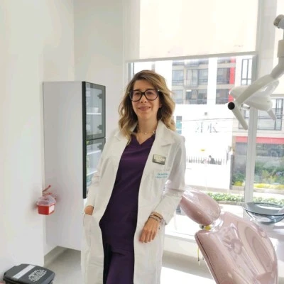
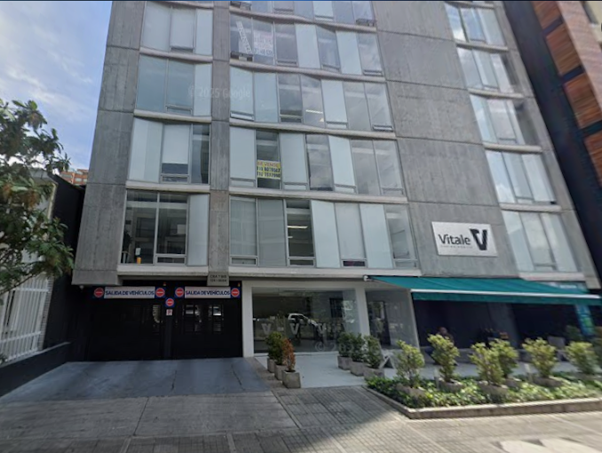

Dra. Ana Vinasco · Odontología láser en Bogotá
Odontología láser: más precisa, menos dolor, recuperación más rápida
Tecnología láser diodo de última generación para tratamientos dentales sin miedo, sin suturas y con resultados clínicamente comprobados.
Quiero agendar mi valoración¿Qué es exactamente el láser en odontología?
Usamos un láser diodo de alta potencia que trabaja con precisión milimétrica. Solo actúa sobre el tejido que necesita tratamiento, sin afectar las zonas sanas. Esto significa menos sangrado, menos inflamación y una recuperación mucho más rápida.
Ver todos los beneficios
Láser vs. odontología convencional
Comparación basada en evidencia clínica, no en opiniones.
Sin anestesia en muchos casos
Más del 70 % de los procedimientos con láser diodo no requieren pinchazos.
Sin suturas ni cicatrices visibles
El láser sella los vasos sanguíneos mientras trabaja, eliminando la necesidad de puntos.
Recuperación en 24-48 horas
La mayoría de pacientes retoman su vida normal al día siguiente.

¿El láser duele?
No. De hecho, la mayoría de los pacientes sienten apenas una sensación de calor leve. Muchos procedimientos se realizan sin anestesia. Incluso quienes tienen miedo al dentista se sorprenden de lo confortable que es.
Ver casos reales¿Para quién es la odontología láser?
Pacientes con miedo dental
Adiós al ruido del torno y las agujas. Una experiencia tranquila.
Niños y adolescentes
Tratamientos rápidos y sin trauma. Frenilectomía en segundos.
Pacientes con condiciones especiales
Diabetes, hipertensión o coagulopatías. El láser reduce riesgos.
Consultorio en Bogotá
Cra. 7 Bis #124-56, cerca a la estación de TransMilenio. Un espacio diseñado para que te sientas seguro y en calma.
Cómo llegar
¿Tienes indicación para tratamiento láser?
Responde 5 preguntas rápidas y te decimos si el láser es para ti.
Quiero saber si aplico